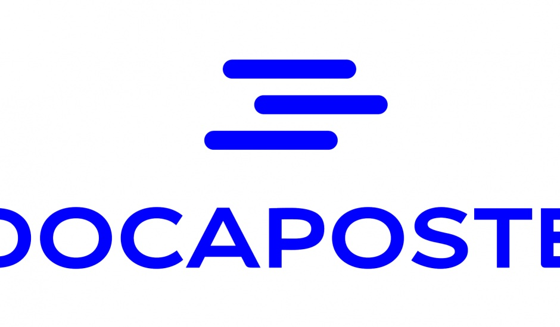

Bonjour et Bienvenue sur mon site, actuellement en master droit du numérique, je vous présente mon CV !
Valentine Lemonnier
A PROPOS DE MOI
- Adresse postale : 94000 CRETEIL
- Adresse mail : valentine@gmail.com

- Numéro de téléphone : 0606060606
- Mon Linkedin

MES EXPERIENCES
Juriste alternante au sein du service juridique de DOCAPOSTE
Septembre 2021 à Aujourd'hui
- Préparation et modification de contrats
- Mise en conformité des clauses RGPD
- Préparation de formation et de conseils aux entreprises
Chargée de Clientèle en Assurance chez COMDATA
Juillet/Août 2021 et Juin 2020 à Janvier 2021
- Réception et émission d'appels
- Accueillir les déclarations sinistres des sociétaires, détecter leurs besoins pour apporter les premières solutions et les accompagner dans la gestion de leurs dossiers
- Tâches administratives et saisies de données informatiques
Chargée de Clientèle dans l'enseignement à distance chez COMDATA
Mai à Août 2019
- Réception et émission d'appels
- Accompagner et orienter les clients en matière de formation à distance
- Tâches administratives et saisies de données informatiques
Employée administrative polyvalente chez COFAQ
Juillet 2018
- Tri et classement de factures
- Gestion du courrier
MES STAGES
Stagiaire au sein du service juridique de l'UIMM de la Vienne
Mai et Juin 2021
- Recherche et rédaction de réponses sur les questions juridiques pour les adhérents
- Rédactioins de clauses RGPD et de protections des données personnelles
- Participation à l'organisation d'un forum de l'emploi virtuel
Stage découverte dans le cabinet d'avocat ACTY
Février 2018
- Découverte du métier d'avocats
- Classement de preuves
- Présence à une audience après analyse du dossier
MES DIPLÔMES
- Licence de droit, mention droit privé à l'Universoté de Poitiers : juin 2021
- Baccalauréat ES, section européenne, mention bien : juin 2018
- Brevet des collèges, mention très bien : juin 2015
{kind=link}